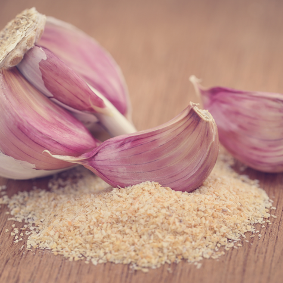
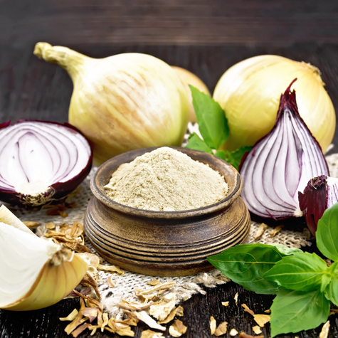

Garlic & Onion powder
Garlic and onion powders are dehydrated and ground forms of their fresh counterparts, used widely as seasonings in cooking for their strong, savory flavors. Garlic powder has a pungent, slightly sweet taste and is often used to enhance meats, sauces, and marinades. Onion powder offers a milder, slightly sweet onion flavor and blends well in soups, dressings, and spice mixes. Both powders are convenient alternatives to fresh garlic and onion, providing long shelf life and ease of use without the need for chopping.

